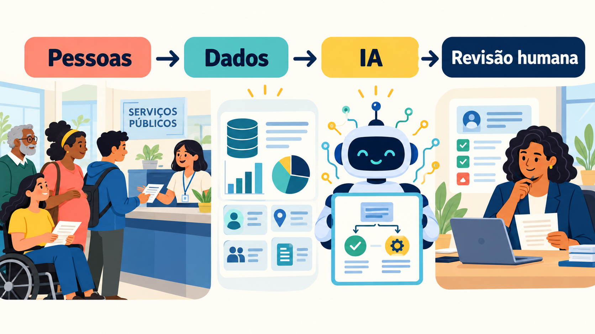
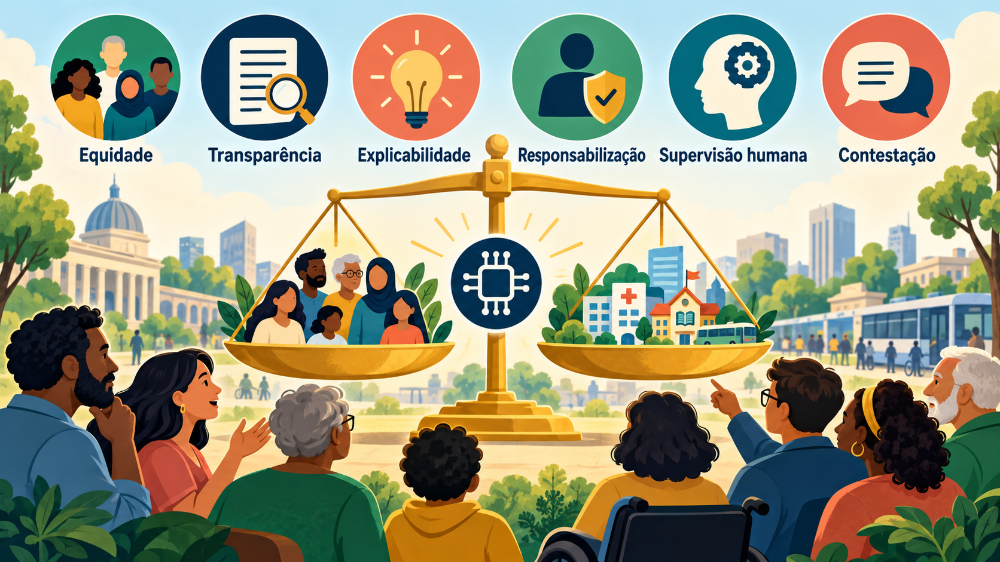
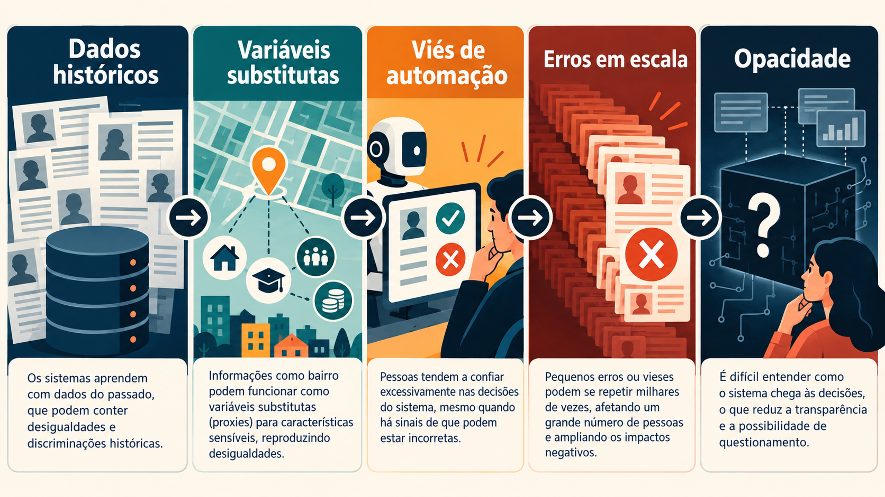
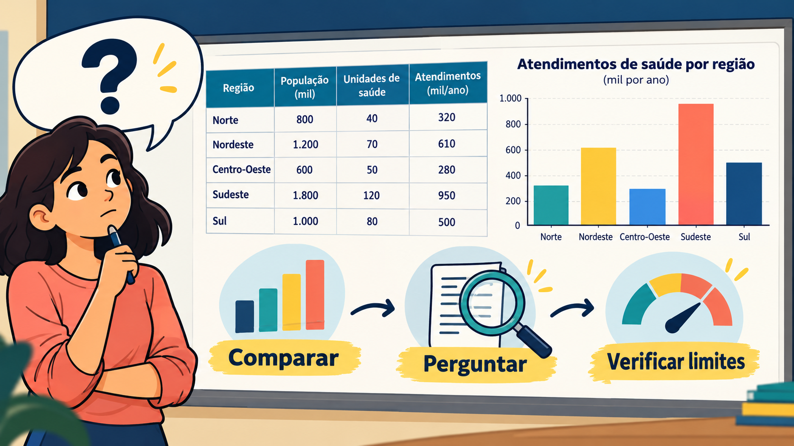

<meta name="claude:viewport-fit-sides" content="cover">
<title>IA e decisões públicas</title>
<style>
  /* Aula em slides: um palco central, conteúdo revelado passo a passo, pranchas ilustradas e duas atividades curtas. */
  :root {
    --bg: #f4f5f2;
    --surface: #ffffff;
    --ink: #1d2331;
    --muted: #566070;
    --line: #d6dbe2;
    --accent: #1f4e79;
    --accent-ink: #ffffff;
    --chip: #e8eef5;
    --ok: #24643f;
    --ok-bg: #e2f0e7;
    --bad: #9b3b1f;
    --bad-bg: #f9e7df;
    --font-display: "Source Serif 4", Georgia, "Times New Roman", serif;
    --font-body: "IBM Plex Sans", system-ui, -apple-system, "Segoe UI", sans-serif;
    --font-mono: "IBM Plex Mono", ui-monospace, Consolas, monospace;
    color-scheme: light;
  }
  @media (prefers-color-scheme: dark) {
    :root:not([data-theme="light"]) {
      --bg: #14171e;
      --surface: #1c2130;
      --ink: #e6e9ef;
      --muted: #a2aab7;
      --line: #323a4a;
      --accent: #8fb8de;
      --accent-ink: #0e1620;
      --chip: #26324a;
      --ok: #7fc49c;
      --ok-bg: #1d3327;
      --bad: #efa27f;
      --bad-bg: #3a2519;
      color-scheme: dark;
    }
  }
  :root[data-theme="dark"] {
    --bg: #14171e;
    --surface: #1c2130;
    --ink: #e6e9ef;
    --muted: #a2aab7;
    --line: #323a4a;
    --accent: #8fb8de;
    --accent-ink: #0e1620;
    --chip: #26324a;
    --ok: #7fc49c;
    --ok-bg: #1d3327;
    --bad: #efa27f;
    --bad-bg: #3a2519;
    color-scheme: dark;
  }

  * { box-sizing: border-box; }
  body {
    margin: 0;
    background: var(--bg);
    color: var(--ink);
    font-family: var(--font-body);
    font-size: 16px;
    line-height: 1.6;
    padding-left: max(16px, env(safe-area-inset-left, 0px));
    padding-right: max(16px, env(safe-area-inset-right, 0px));
    padding-block: 20px 0;
  }
  .deck { max-width: 54rem; margin: 0 auto; }
  h2, h3, h4 { line-height: 1.2; text-wrap: balance; }
  p { margin: 0.6rem 0; }
  ul, ol { padding-left: 1.2rem; }
  li { margin: 0.35rem 0; }

  /* Cabeçalho e navegação por partes */
  .deck-head { display: flex; justify-content: space-between; align-items: baseline; gap: 1rem; }
  .brand { font-family: var(--font-display); font-weight: 700; font-size: 1.1rem; }
  .counter { color: var(--muted); font-size: 0.9rem; font-variant-numeric: tabular-nums; }
  .parts { display: flex; flex-wrap: wrap; gap: 0.4rem; margin: 0.8rem 0; }
  .parts button {
    font: inherit;
    font-size: 0.88rem;
    padding: 0.35rem 0.75rem;
    border: 1px solid var(--line);
    border-radius: 999px;
    background: var(--surface);
    color: var(--ink);
    cursor: pointer;
  }
  .parts button[aria-current="true"] {
    background: var(--accent);
    border-color: var(--accent);
    color: var(--accent-ink);
    font-weight: 600;
  }
  .progress { height: 4px; background: var(--line); border-radius: 2px; overflow: hidden; }
  .progress span { display: block; height: 100%; width: 0; background: var(--accent); transition: width 0.3s ease; }

  /* Palco */
  .stage {
    background: var(--surface);
    border: 1px solid var(--line);
    border-radius: 14px;
    padding: clamp(1.1rem, 4vw, 2.3rem);
    margin-top: 0.9rem;
    min-height: 25rem;
  }
  .slide:not([hidden]) { animation: slide-in 0.35s ease both; }
  .kicker {
    font-size: 0.78rem;
    letter-spacing: 0.08em;
    text-transform: uppercase;
    color: var(--muted);
    margin: 0 0 0.5rem;
  }
  .slide h1 {
    font-family: var(--font-display);
    font-size: clamp(2.2rem, 7vw, 3.4rem);
    line-height: 1.08;
    margin: 0.2rem 0 0.8rem;
    text-wrap: balance;
  }
  .slide h2 {
    font-family: var(--font-display);
    font-size: clamp(1.6rem, 4.6vw, 2.2rem);
    margin: 0 0 0.9rem;
  }
  .slide h3 { font-size: 1.1rem; margin: 0 0 0.4rem; }
  .slide > p, .slide > ul, .slide > ol { max-width: 40rem; font-size: 1.05rem; }
  .lede { color: var(--muted); font-size: 1.15rem; max-width: 38rem; }
  .nota { font-size: 0.9rem; color: var(--muted); }
  .rev:not(.is-hidden) { animation: rev-in 0.4s ease both; }
  .rev.is-hidden { display: none; }

  .prancha {
    display: block;
    width: 100%;
    height: auto;
    aspect-ratio: 16 / 9;
    object-fit: cover;
    margin: 0.3rem 0 1rem;
    border: 1px solid var(--line);
    border-radius: 10px;
    background: var(--chip);
  }

  .takeaway {
    margin-top: 1.1rem;
    padding: 0.8rem 1rem;
    border-left: 4px solid var(--accent);
    border-radius: 8px;
    background: color-mix(in srgb, var(--accent) 10%, var(--surface));
    max-width: 40rem;
  }
  .takeaway p { margin: 0; }

  /* Listas de passos e cartões */
  .steps-list { list-style: none; padding: 0; margin: 0.4rem 0 0; max-width: 40rem; }
  .steps-list li {
    display: grid;
    grid-template-columns: 2.2rem 1fr;
    gap: 0.8rem;
    align-items: start;
    padding: 0.7rem 0;
    border-top: 1px solid var(--line);
  }
  .steps-list .num {
    display: grid;
    place-items: center;
    width: 2rem;
    height: 2rem;
    border-radius: 50%;
    background: var(--chip);
    color: var(--accent);
    font-weight: 700;
  }
  .steps-list p { margin: 0; }
  .chips-static { display: flex; flex-wrap: wrap; gap: 0.5rem; margin-top: 0.5rem; }
  .chip-s {
    padding: 0.4rem 0.85rem;
    border: 1px solid var(--line);
    border-radius: 999px;
    background: var(--chip);
    font-size: 0.98rem;
  }
  .cards3 { display: grid; grid-template-columns: repeat(auto-fit, minmax(210px, 1fr)); gap: 0.75rem; margin-top: 0.5rem; }
  .card {
    border: 1px solid var(--line);
    border-radius: 10px;
    padding: 1rem 1.1rem;
    background: var(--surface);
    min-width: 0;
  }
  .card h3 { margin-bottom: 0.3rem; }
  .card p { margin: 0.3rem 0; font-size: 0.97rem; }
  .card .nivel { font-size: 0.78rem; letter-spacing: 0.08em; text-transform: uppercase; color: var(--muted); }

  .pr-row {
    display: grid;
    grid-template-columns: 9rem 1fr;
    gap: 0.9rem;
    padding: 0.85rem 0;
    border-top: 1px solid var(--line);
    max-width: 42rem;
  }
  .pr-row p { margin: 0; font-size: 1.05rem; }
  .rot { font-size: 0.8rem; letter-spacing: 0.06em; text-transform: uppercase; color: var(--accent); font-weight: 600; padding-top: 0.2rem; }

  /* Pares pergunta fraca / melhor */
  .pair { border: 1px solid var(--line); border-radius: 10px; padding: 0.9rem 1rem; margin: 0.7rem 0; max-width: 42rem; }
  .pair p { margin: 0.3rem 0; font-size: 1rem; }
  .pair .fraca { background: var(--bad-bg); border-left: 4px solid var(--bad); padding: 0.45rem 0.7rem; border-radius: 6px; }
  .pair .melhor { background: var(--ok-bg); border-left: 4px solid var(--ok); padding: 0.45rem 0.7rem; border-radius: 6px; }
  .pair .porque { color: var(--muted); font-size: 0.93rem; }
  .tag { font-weight: 600; font-size: 0.78rem; letter-spacing: 0.06em; text-transform: uppercase; margin-right: 0.4rem; }

  /* Tabela e barras */
  .tabela-wrap { overflow-x: auto; border: 1px solid var(--line); border-radius: 8px; background: var(--surface); margin-top: 0.6rem; max-width: 40rem; }
  table { border-collapse: collapse; width: 100%; font-family: var(--font-mono); font-size: 0.88rem; font-variant-numeric: tabular-nums; }
  th, td { padding: 0.5rem 0.7rem; border-bottom: 1px solid var(--line); text-align: left; white-space: nowrap; }
  td:not(:first-child), th:not(:first-child) { text-align: right; }
  th { font-family: var(--font-body); font-weight: 600; background: var(--chip); }
  .bars { max-width: 40rem; margin-top: 0.4rem; }
  .bar-row { display: grid; grid-template-columns: 8rem 1fr 3.5rem; gap: 0.7rem; align-items: center; margin: 0.4rem 0; font-size: 0.97rem; }
  .bar { height: 1.1rem; background: var(--chip); border-radius: 6px; overflow: hidden; }
  .bar i { display: block; height: 100%; background: var(--accent); border-radius: 6px; }
  .bar i.alerta { background: var(--bad); }
  .bar-row b { font-variant-numeric: tabular-nums; text-align: right; }
  .two-col { display: grid; grid-template-columns: 1fr 1fr; gap: 0.75rem; max-width: 42rem; margin-top: 0.6rem; }

  /* Atividades */
  .choice, .btn, .btn-ghost { font: inherit; cursor: pointer; }
  .choices { display: grid; gap: 0.5rem; max-width: 40rem; margin-top: 0.6rem; }
  .choice {
    text-align: left;
    padding: 0.7rem 0.9rem;
    border: 1px solid var(--line);
    border-radius: 8px;
    background: transparent;
    color: var(--ink);
  }
  .choice:hover:not(:disabled) { border-color: var(--accent); background: var(--chip); }
  .choice:disabled { cursor: default; opacity: 0.75; }
  .choice.certa { border-color: var(--ok); background: var(--ok-bg); opacity: 1; }
  .choice.errada { border-color: var(--bad); background: var(--bad-bg); opacity: 1; }
  .cats { display: flex; flex-wrap: wrap; gap: 0.4rem; }
  .cats .choice { padding: 0.4rem 0.7rem; font-size: 0.9rem; border-radius: 6px; }
  .quest { border: 1px solid var(--line); border-radius: 10px; padding: 0.9rem 1rem; margin-top: 0.7rem; max-width: 42rem; }
  .quest > p { margin: 0 0 0.6rem; font-weight: 500; }
  .retorno { margin-top: 0.8rem; border-radius: 6px; padding: 0.75rem 1rem; border-left: 4px solid var(--line); background: var(--chip); max-width: 42rem; }
  .retorno.ok { background: var(--ok-bg); border-left-color: var(--ok); }
  .retorno.nao { background: var(--bad-bg); border-left-color: var(--bad); }
  .retorno p { margin: 0.3rem 0; font-size: 0.97rem; }
  .marca { font-weight: 600; }
  .case-text { max-width: 40rem; padding: 0.9rem 1rem; border: 1px solid var(--line); border-radius: 10px; background: var(--bg); font-size: 1.02rem; }

  .resumo { list-style: none; padding: 0; max-width: 40rem; }
  .resumo li { display: flex; justify-content: space-between; gap: 1rem; padding: 0.6rem 0; border-bottom: 1px solid var(--line); }

  /* Controles */
  .controls {
    position: sticky;
    bottom: 0;
    display: flex;
    justify-content: space-between;
    align-items: center;
    gap: 0.6rem;
    margin-top: 1rem;
    padding-top: 0.7rem;
    padding-bottom: calc(0.7rem + env(safe-area-inset-bottom, 0px));
    background: var(--bg);
    border-top: 1px solid var(--line);
  }
  .controls .hint { color: var(--muted); font-size: 0.82rem; text-align: center; }
  .btn {
    font-weight: 600;
    background: var(--accent);
    color: var(--accent-ink);
    border: 1px solid var(--accent);
    border-radius: 8px;
    padding: 0.6rem 1.1rem;
  }
  .btn-ghost {
    font-weight: 600;
    background: transparent;
    color: var(--accent);
    border: 1px solid var(--accent);
    border-radius: 8px;
    padding: 0.6rem 1.1rem;
  }
  .btn:disabled, .btn-ghost:disabled { opacity: 0.4; cursor: default; }
  .actions { margin-top: 0.8rem; display: flex; gap: 0.6rem; flex-wrap: wrap; }
  button:focus-visible { outline: 3px solid var(--accent); outline-offset: 2px; }

  @keyframes slide-in { from { opacity: 0; transform: translateX(14px); } to { opacity: 1; transform: translateX(0); } }
  @keyframes rev-in { from { opacity: 0; transform: translateY(8px); } to { opacity: 1; transform: translateY(0); } }

  @media (max-width: 600px) {
    .pr-row { grid-template-columns: 1fr; gap: 0.2rem; }
    .two-col { grid-template-columns: 1fr; }
    .bar-row { grid-template-columns: 5.5rem 1fr 3.2rem; }
    .controls .hint { display: none; }
  }
  @media (prefers-reduced-motion: reduce) {
    *, *::before, *::after { transition: none !important; animation: none !important; }
  }
</style>

<main class="deck">
  <div class="deck-head">
    <span class="brand">IA e decisões públicas</span>
    <span class="counter" id="counter" aria-live="polite">1 / 22</span>
  </div>
  <nav class="parts" id="parts" aria-label="Partes da aula"></nav>
  <div class="progress" aria-hidden="true"><span id="bar"></span></div>

  <div class="stage" id="stage">

    <!-- 0 · Capa -->
    <section class="slide">
      <p class="kicker">Aula interativa · Ética e tecnologia no serviço público</p>
      <h1>IA e decisões públicas</h1>
      <p class="lede">Passo a passo, você vai ver como a inteligência artificial entra em decisões administrativas, quais riscos éticos aparecem e como fazer boas perguntas a partir de dados.</p>
      <h3>Ao final, você será capaz de:</h3>
      <ol class="steps-list">
        <li class="rev"><span class="num">1</span><p>Explicar o que é uma decisão administrativa automatizada.</p></li>
        <li class="rev"><span class="num">2</span><p>Aplicar seis princípios éticos para avaliar um caso.</p></li>
        <li class="rev"><span class="num">3</span><p>Formular perguntas claras, verificáveis e responsáveis a partir de dados.</p></li>
      </ol>
      <p class="nota">Use o botão "Próximo" ou as setas do teclado. Alguns slides revelam o conteúdo aos poucos.</p>
    </section>

    <!-- 1 · Decisão administrativa -->
    <section class="slide">
      <p class="kicker">Parte 1 · O tema</p>
      <h2>O que é uma decisão administrativa?</h2>
      <p>É a escolha que um órgão público faz sobre a vida de uma pessoa ou de uma empresa, com base em lei e em regras conhecidas.</p>
      <p><strong>Exemplos do dia a dia:</strong></p>
      <div class="chips-static">
        <span class="chip-s rev">Conceder um benefício</span>
        <span class="chip-s rev">Aprovar uma matrícula</span>
        <span class="chip-s rev">Isentar uma taxa</span>
        <span class="chip-s rev">Ordenar uma fila de atendimento</span>
        <span class="chip-s rev">Decidir onde abrir um serviço</span>
      </div>
      <div class="takeaway rev"><p><strong>Ideia-chave:</strong> essas decisões afetam direitos. Por isso precisam de base legal, motivo claro e possibilidade de recurso.</p></div>
    </section>

    <!-- 2 · Onde entra a IA -->
    <section class="slide">
      <p class="kicker">Parte 1 · O tema</p>
      <h2>Onde a IA entra nessa decisão?</h2>
      
      <ol class="steps-list">
        <li class="rev"><span class="num">1</span><p><strong>Pessoas</strong> pedem um serviço ou são afetadas por uma decisão.</p></li>
        <li class="rev"><span class="num">2</span><p><strong>Dados</strong> sobre essas pessoas e sobre o passado alimentam o sistema.</p></li>
        <li class="rev"><span class="num">3</span><p>A <strong>IA</strong> calcula, recomenda ou decide.</p></li>
        <li class="rev"><span class="num">4</span><p>Uma <strong>revisão humana</strong> confere o resultado, explica à pessoa e permite recurso.</p></li>
      </ol>
      <div class="takeaway rev"><p><strong>Ideia-chave:</strong> a IA pode ajudar a organizar decisões, mas a responsabilidade continua sendo humana e pública.</p></div>
    </section>

    <!-- 3 · Graus de automação -->
    <section class="slide">
      <p class="kicker">Parte 1 · O tema</p>
      <h2>Quanto a IA decide?</h2>
      <p>Nem toda IA decide sozinha. O risco muda conforme o grau de automação:</p>
      <div class="cards3">
        <article class="card rev">
          <span class="nivel">Nível 1</span>
          <h3>Apoio</h3>
          <p>A IA organiza informações. A pessoa decide.</p>
          <p class="nota">Ex.: resumir um processo longo.</p>
        </article>
        <article class="card rev">
          <span class="nivel">Nível 2</span>
          <h3>Recomendação</h3>
          <p>A IA sugere um resultado. A pessoa pode aceitar ou mudar.</p>
          <p class="nota">Risco: aceitar sem questionar (viés de automação).</p>
        </article>
        <article class="card rev">
          <span class="nivel">Nível 3</span>
          <h3>Decisão automática</h3>
          <p>A IA decide sem intervenção humana.</p>
          <p class="nota">Maior risco. A LGPD (art. 20) garante o direito de pedir revisão.</p>
        </article>
      </div>
      <div class="takeaway rev"><p><strong>Regra prática:</strong> quanto maior o impacto na vida da pessoa, maior deve ser a supervisão humana.</p></div>
    </section>

    <!-- 4 · Seis princípios (visão geral) -->
    <section class="slide">
      <p class="kicker">Parte 2 · Princípios</p>
      <h2>Seis princípios para avaliar uma decisão</h2>
      
      <p>Pense neles como pesos de uma balança: de um lado, os ganhos de eficiência da IA; do outro, os direitos das pessoas. Nos próximos slides, veja cada princípio com uma pergunta-guia e um exemplo de falha.</p>
    </section>

    <!-- 5–10 · Princípios (gerados pelo script) -->
    <div id="slides-principios" style="display: contents"></div>

    <!-- 11 · Como os problemas aparecem -->
    <section class="slide">
      <p class="kicker">Parte 2 · Princípios</p>
      <h2>Como os problemas aparecem</h2>
      
      <p>Os riscos se alimentam em cadeia. Para reconhecer cada um, faça uma pergunta:</p>
      <ol class="steps-list">
        <li class="rev"><span class="num">1</span><p><strong>Dados históricos:</strong> de que período e de que população vêm os dados?</p></li>
        <li class="rev"><span class="num">2</span><p><strong>Variáveis substitutas:</strong> CEP, escola ou profissão estão no modelo, funcionando como substitutos de renda ou raça?</p></li>
        <li class="rev"><span class="num">3</span><p><strong>Viés de automação:</strong> o servidor consegue discordar da máquina, ou só aprova?</p></li>
        <li class="rev"><span class="num">4</span><p><strong>Erros em escala:</strong> quantas pessoas uma falha de regra atinge ao mesmo tempo?</p></li>
        <li class="rev"><span class="num">5</span><p><strong>Opacidade:</strong> dá para explicar o resultado em linguagem comum?</p></li>
      </ol>
    </section>

    <!-- 12 · Método -->
    <section class="slide">
      <p class="kicker">Parte 3 · Aplicar</p>
      <h2>Um método em três passos</h2>
      <p>Para analisar qualquer caso de IA em decisão pública, siga esta sequência:</p>
      <ol class="steps-list">
        <li class="rev"><span class="num">1</span><p><strong>Observe os dados.</strong> De onde vêm? O que eles representam? Que desigualdades podem carregar?</p></li>
        <li class="rev"><span class="num">2</span><p><strong>Pergunte quem pode ser prejudicado.</strong> Algum grupo recebe resultados muito diferentes dos demais?</p></li>
        <li class="rev"><span class="num">3</span><p><strong>Verifique explicação, revisão e recurso.</strong> A pessoa entende o resultado e consegue contestá-lo?</p></li>
      </ol>
    </section>

    <!-- 13 · Exemplo resolvido -->
    <section class="slide">
      <p class="kicker">Parte 3 · Aplicar</p>
      <h2>Exemplo resolvido: fila de consultas</h2>
      <p class="case-text">Uma prefeitura usa IA para ordenar a fila de agendamento de consultas. O modelo foi treinado com o histórico de faltas dos últimos cinco anos. Bairros com pouco transporte público tiveram mais faltas, e o sistema passou a empurrar esses pacientes para o fim da fila.</p>
      <ol class="steps-list">
        <li class="rev"><span class="num">1</span><p><strong>Dados:</strong> o modelo aprendeu com faltas passadas, que refletem a falta de transporte e não desinteresse.</p></li>
        <li class="rev"><span class="num">2</span><p><strong>Quem é prejudicado:</strong> moradores de bairros distantes, que já têm mais dificuldade de acesso.</p></li>
        <li class="rev"><span class="num">3</span><p><strong>Explicação e recurso:</strong> o paciente não sabe por que foi postergado e não tem como contestar.</p></li>
      </ol>
      <div class="takeaway rev"><p><strong>Conclusão:</strong> o histórico reproduz uma desigualdade de acesso. Princípios em jogo: equidade, transparência e explicabilidade. Medida: rever o critério, informar a regra e permitir recurso.</p></div>
    </section>

    <!-- 14 · Atividade 1 -->
    <section class="slide">
      <p class="kicker">Parte 3 · Atividade 1 de 2</p>
      <h2>Sua vez: analise um caso</h2>
      <p class="case-text">Um município automatizou a análise de pedidos de isenção da taxa de coleta de lixo. O sistema cruza cadastros e negou automaticamente 300 pedidos, porque um arquivo antigo não registrava a mudança de endereço. Nenhum servidor revisou os casos, e o cidadão recebeu apenas a mensagem "indeferido".</p>
      <p><strong>Qual é o principal risco ético?</strong></p>
      <div class="choices" id="quiz1"></div>
      <div class="retorno" id="quiz1-ret" role="status" aria-live="polite" hidden></div>
    </section>

    <!-- 15 · Comparar, perguntar, verificar limites -->
    <section class="slide">
      <p class="kicker">Parte 4 · Perguntar bem</p>
      <h2>Comparar, perguntar, verificar limites</h2>
      
      <p>Antes de perguntar à IA, olhe os dados. Três movimentos ajudam:</p>
      <ol class="steps-list">
        <li class="rev"><span class="num">1</span><p><strong>Comparar.</strong> Coloque os números lado a lado: regiões, grupos, períodos.</p></li>
        <li class="rev"><span class="num">2</span><p><strong>Perguntar.</strong> Formule uma pergunta específica sobre a diferença que você viu.</p></li>
        <li class="rev"><span class="num">3</span><p><strong>Verificar limites.</strong> Pergunte o que os dados não permitem concluir.</p></li>
      </ol>
    </section>

    <!-- 16 · Qualidades de uma boa pergunta -->
    <section class="slide">
      <p class="kicker">Parte 4 · Perguntar bem</p>
      <h2>Como é uma boa pergunta à IA</h2>
      <p>Uma IA responde ao que você pergunta. Quando os dados são de uma decisão pública, a qualidade da pergunta muda a qualidade da análise. Uma boa pergunta é:</p>
      <ol class="steps-list">
        <li class="rev"><span class="num">1</span><p><strong>Específica.</strong> Diz o que medir: uma quantidade, uma proporção ou uma comparação.</p></li>
        <li class="rev"><span class="num">2</span><p><strong>Respondível.</strong> Usa campos que existem nos dados. Se a informação não está lá, a IA pode inventar.</p></li>
        <li class="rev"><span class="num">3</span><p><strong>Neutra.</strong> Pergunta em vez de concluir. Evita julgamentos como "merece" ou "não precisa".</p></li>
        <li class="rev"><span class="num">4</span><p><strong>Cautelosa.</strong> Pede os limites da conclusão e as evidências que a sustentam.</p></li>
      </ol>
    </section>

    <!-- 17 · Fraca para melhor -->
    <section class="slide">
      <p class="kicker">Parte 4 · Perguntar bem</p>
      <h2>Da pergunta fraca à melhor</h2>
      <p class="nota">Contexto: uma secretaria quer usar IA para recomendar onde abrir novas unidades de saúde. Os dados estão no próximo slide.</p>
      <div class="pair rev">
        <p class="fraca"><span class="tag">Fraca</span>A IA sabe onde abrir novas unidades?</p>
        <p class="melhor"><span class="tag">Melhor</span>Qual é a população por unidade de saúde em cada região, e quais regiões ficam acima da média geral?</p>
        <p class="porque">Por quê: "saber" não tem critério. A versão melhor define o que medir.</p>
      </div>
      <div class="pair rev">
        <p class="fraca"><span class="tag">Fraca</span>Qual região tem os pacientes mais satisfeitos?</p>
        <p class="melhor"><span class="tag">Melhor</span>Que informações a tabela traz sobre acesso e uso dos serviços, e que dados faltam para avaliar satisfação?</p>
        <p class="porque">Por quê: a tabela não tem satisfação. A versão melhor não induz a IA a inventar uma resposta.</p>
      </div>
      <div class="pair rev">
        <p class="fraca"><span class="tag">Fraca</span>O Norte merece menos unidades porque tem menos atendimentos?</p>
        <p class="melhor"><span class="tag">Melhor</span>Há diferença nos atendimentos por habitante entre as regiões? Isso reflete necessidade ou dificuldade de acesso? Que limitações os dados têm?</p>
        <p class="porque">Por quê: troca um julgamento por uma medida e pede cautela.</p>
      </div>
    </section>

    <!-- 18 · Os dados -->
    <section class="slide">
      <p class="kicker">Parte 4 · Perguntar bem</p>
      <h2>Os dados que vamos usar</h2>
      <p class="nota">Tabela de treino com dados fictícios sobre a rede de saúde por região. Serve para praticar perguntas, não para tirar conclusões sobre regiões reais.</p>
      <div class="tabela-wrap">
        <table id="tabela">
          <thead>
            <tr><th>Região</th><th>População (mil)</th><th>Unidades de saúde</th><th>Atendimentos (mil/ano)</th></tr>
          </thead>
          <tbody>
            <tr><td>Norte</td><td>800</td><td>40</td><td>320</td></tr>
            <tr><td>Nordeste</td><td>1.200</td><td>70</td><td>610</td></tr>
            <tr><td>Centro-Oeste</td><td>600</td><td>50</td><td>280</td></tr>
            <tr><td>Sudeste</td><td>1.800</td><td>120</td><td>950</td></tr>
            <tr><td>Sul</td><td>1.000</td><td>80</td><td>500</td></tr>
          </tbody>
        </table>
      </div>
      <div class="actions">
        <button type="button" class="btn-ghost" id="copiar">Copiar tabela (para colar em uma IA)</button>
      </div>
      <p class="nota" id="copiar-msg" role="status" aria-live="polite"></p>
    </section>

    <!-- 19 · Lendo os dados -->
    <section class="slide">
      <p class="kicker">Parte 4 · Perguntar bem</p>
      <h2>Leia os dados antes de perguntar</h2>
      <p class="rev"><strong>Primeiro padrão:</strong> atendimentos por habitante (atendimentos ÷ população).</p>
      <div class="bars rev" id="barras-atend" aria-label="Atendimentos por habitante por região"></div>
      <p class="rev"><strong>Segundo padrão:</strong> habitantes por unidade de saúde, em milhares.</p>
      <div class="bars rev" id="barras-unid" aria-label="Habitantes por unidade de saúde por região, em milhares"></div>
      <div class="two-col rev">
        <div class="card">
          <h3>O que podemos dizer</h3>
          <p>Nesta amostra, o Norte tem a maior população por unidade (20 mil) e o menor número de atendimentos por habitante (0,40).</p>
        </div>
        <div class="card">
          <h3>O que não podemos dizer</h3>
          <p>Que o Norte precisa de menos unidades, ou que a falta de unidades é a causa. Atendimentos medem uso, não necessidade.</p>
        </div>
      </div>
      <div class="takeaway rev"><p><strong>Por que isso importa:</strong> se uma IA aprendesse a abrir unidades onde já há mais atendimentos, reforçaria a desigualdade de acesso. Perguntar bem ajuda a perceber esse risco.</p></div>
    </section>

    <!-- 20 · Atividade 2 -->
    <section class="slide">
      <p class="kicker">Parte 4 · Atividade 2 de 2</p>
      <h2>Sua vez: classifique as perguntas</h2>
      <p>Escolha uma categoria para cada pergunta sobre a tabela de saúde. A resposta aparece logo em seguida.</p>
      <div id="quiz2"></div>
    </section>

    <!-- 21 · Fechamento -->
    <section class="slide">
      <p class="kicker">Fechamento</p>
      <h2>O que levar daqui</h2>
      <p>Antes de confiar em uma decisão automatizada, faça cinco perguntas:</p>
      <ol class="steps-list">
        <li class="rev"><span class="num">1</span><p>Qual é a base legal e a finalidade desta decisão?</p></li>
        <li class="rev"><span class="num">2</span><p>A pessoa foi informada de que um sistema participou, e dá para explicar o resultado?</p></li>
        <li class="rev"><span class="num">3</span><p>Algum grupo é afetado de forma desigual?</p></li>
        <li class="rev"><span class="num">4</span><p>Quem acompanha o sistema e responde pelo erro?</p></li>
        <li class="rev"><span class="num">5</span><p>Como a pessoa pede revisão e contesta?</p></li>
      </ol>
      <h3 style="margin-top: 1.2rem">Seu desempenho nas atividades</h3>
      <ul class="resumo" id="resumo"></ul>
      <div class="actions">
        <button type="button" class="btn-ghost" id="recomecar">Recomeçar a aula</button>
      </div>
    </section>

  </div>

  <div class="controls">
    <button type="button" class="btn-ghost" id="voltar">Voltar</button>
    <span class="hint">As setas do teclado também funcionam</span>
    <button type="button" class="btn" id="proximo">Próximo</button>
  </div>
</main>

<script>
  const PARTES = [
    { nome: "O tema", inicio: 0 },
    { nome: "Princípios", inicio: 4 },
    { nome: "Aplicar", inicio: 12 },
    { nome: "Perguntar bem", inicio: 15 }
  ];

  const PRINCIPIOS = [
    {
      nome: "Equidade",
      def: "Grupos não podem ser tratados de forma injusta por causa de região, renda, raça, gênero ou idade, nem por variáveis que funcionem como substitutas delas.",
      pergunta: "Algum grupo recebe resultados muito diferentes dos demais? Os dados refletem desigualdades antigas?",
      exemplo: "Uma fila de consultas que empurra para o fim moradores de bairros com pouco transporte."
    },
    {
      nome: "Transparência",
      def: "As pessoas precisam saber que um sistema participou da decisão e quais dados ele usou.",
      pergunta: "O cidadão foi informado de que há um sistema automatizado e de quais dados ele considera?",
      exemplo: "Uma mensagem de \"indeferido\" que não menciona que a análise foi feita por um algoritmo."
    },
    {
      nome: "Explicabilidade",
      def: "Deve ser possível explicar, em linguagem comum, por que aquele resultado foi dado.",
      pergunta: "Se a pessoa perguntar \"por que eu?\", alguém consegue responder com clareza?",
      exemplo: "Um modelo tão complexo que nem o órgão que o usa consegue justificar uma negativa."
    },
    {
      nome: "Responsabilização",
      def: "Deve estar claro quem responde pelo erro: o órgão, o fornecedor do sistema ou o servidor que aprovou a recomendação.",
      pergunta: "Se o sistema errar, quem corrige, quem repara o dano e quem responde?",
      exemplo: "O órgão culpa o fornecedor, o fornecedor culpa os dados e ninguém repara a pessoa prejudicada."
    },
    {
      nome: "Supervisão humana",
      def: "Uma pessoa competente acompanha o sistema, entende seus limites e tem autoridade para corrigir ou desfazer o resultado, em vez de apenas aprovar o que a máquina sugere.",
      pergunta: "Quem revisa as recomendações? Essa pessoa tem tempo, informação e autoridade para discordar?",
      exemplo: "Um servidor que aprova centenas de recomendações por hora, sem condições de conferir nenhuma."
    },
    {
      nome: "Contestação",
      def: "A pessoa afetada pode pedir revisão e ser ouvida. A LGPD (Lei 13.709/2018, art. 20) garante o direito de pedir revisão de decisões tomadas unicamente com base em tratamento automatizado de dados pessoais.",
      pergunta: "Existe canal, prazo e alguém com autoridade para mudar a decisão?",
      exemplo: "Pagamentos bloqueados por um alerta automático, sem prazo nem canal de defesa."
    }
  ];

  const OPCOES1 = [
    { texto: "A mudança de endereço deveria ter sido digitada manualmente, e o problema acabou aí.", certa: false },
    { texto: "O cruzamento de dados é sempre ilegal, por isso o sistema não deveria existir.", certa: false },
    { texto: "Uma falha de dados gera negativas em massa, sem revisão humana nem explicação ao cidadão.", certa: true }
  ];
  const EXPLICA1 = "Um dado desatualizado virou decisão em massa, sem revisão e sem motivo informado. O cidadão precisa entender a negativa e poder contestá-la, e o órgão responde pelo sistema que adotou. Princípios em jogo: supervisão humana, explicabilidade e contestação. Medida imediata: corrigir o cadastro e revisar os 300 casos.";

  const CATEGORIAS = {
    boa: "Boa pergunta",
    melhorar: "Precisa melhorar",
    dados: "Os dados não respondem",
    risco: "Carregada ou enviesada"
  };
  const QUESTOES = [
    {
      texto: "A IA sabe onde abrir novas unidades de saúde?",
      resposta: "melhorar",
      explica: "Pergunta vaga: \"saber\" depende de critérios como acesso, população e distância. Melhore dizendo o que medir."
    },
    {
      texto: "Qual é a razão entre atendimentos e população em cada região, e como as regiões se comparam?",
      resposta: "boa",
      explica: "Define a medida, usa campos que existem na tabela e permite comparar as regiões."
    },
    {
      texto: "O Norte merece menos unidades porque tem menos atendimentos?",
      resposta: "risco",
      explica: "Presume que menos atendimentos significa menos necessidade. Atendimentos medem uso e podem ser baixos justamente onde o acesso é pior."
    },
    {
      texto: "Qual região tem os pacientes mais satisfeitos?",
      resposta: "dados",
      explica: "A tabela não tem nenhuma medida de satisfação, e uma IA poderia inventar a resposta. Melhor perguntar que dados faltam."
    },
    {
      texto: "Existe relação entre o número de unidades e o número de atendimentos? Que limitações essas 5 linhas de dados têm para concluir isso?",
      resposta: "boa",
      explica: "Pede a relação e também a cautela. Associação não é causa, e 5 regiões é uma amostra muito pequena."
    }
  ];

  const DADOS_ATEND = [
    { rotulo: "Norte", valor: 0.40 },
    { rotulo: "Centro-Oeste", valor: 0.47 },
    { rotulo: "Sul", valor: 0.50 },
    { rotulo: "Nordeste", valor: 0.51 },
    { rotulo: "Sudeste", valor: 0.53 }
  ];
  const DADOS_UNID = [
    { rotulo: "Norte", valor: 20.0 },
    { rotulo: "Nordeste", valor: 17.1 },
    { rotulo: "Sudeste", valor: 15.0 },
    { rotulo: "Sul", valor: 12.5 },
    { rotulo: "Centro-Oeste", valor: 12.0 }
  ];

  const state = {
    atual: 0,
    visto: new Set(),
    rev: {},
    quiz1: null,
    quiz2: QUESTOES.map(() => null)
  };

  /* ---------- Construção dos slides ---------- */
  function renderPrincipios() {
    const host = document.getElementById("slides-principios");
    PRINCIPIOS.forEach((p, k) => {
      const s = document.createElement("section");
      s.className = "slide";
      s.innerHTML = `
        <p class="kicker">Parte 2 · Princípio ${k + 1} de ${PRINCIPIOS.length}</p>
        <h2>${p.nome}</h2>
        <div class="pr-row rev"><span class="rot">O que significa</span><p>${p.def}</p></div>
        <div class="pr-row rev"><span class="rot">Pergunta-guia</span><p>${p.pergunta}</p></div>
        <div class="pr-row rev"><span class="rot">Exemplo de falha</span><p>${p.exemplo}</p></div>`;
      host.appendChild(s);
    });
  }

  function renderBarras(id, itens, maximo, formatar) {
    const alvo = Math.max(...itens.map(d => d.valor));
    document.getElementById(id).innerHTML = itens.map(d => `
      <div class="bar-row">
        <span>${d.rotulo}</span>
        <div class="bar"><i class="${d.valor === alvo && id === "barras-unid" ? "alerta" : ""}" style="width: ${(d.valor / maximo) * 100}%"></i></div>
        <b>${formatar(d.valor)}</b>
      </div>`).join("");
  }

  renderPrincipios();
  renderBarras("barras-atend", DADOS_ATEND, 0.6, v => v.toFixed(2).replace(".", ","));
  renderBarras("barras-unid", DADOS_UNID, 20, v => v.toFixed(1).replace(".", ","));

  const slides = [...document.querySelectorAll(".slide")];
  slides.forEach(s => { s.hidden = true; });
  const N = slides.length;

  /* ---------- Navegação ---------- */
  const elContador = document.getElementById("counter");
  const elBarra = document.getElementById("bar");
  const elProximo = document.getElementById("proximo");
  const elVoltar = document.getElementById("voltar");
  const elPartes = document.getElementById("parts");

  PARTES.forEach((p, k) => {
    const b = document.createElement("button");
    b.type = "button";
    b.textContent = `${k + 1} · ${p.nome}`;
    b.addEventListener("click", () => mostrar(p.inicio));
    elPartes.appendChild(b);
  });

  function itensRev(slide) { return [...slide.querySelectorAll(".rev")]; }

  function aplicarRev(i) {
    itensRev(slides[i]).forEach((el, k) => el.classList.toggle("is-hidden", k >= state.rev[i]));
  }

  function atualizarControles() {
    const i = state.atual;
    const total = itensRev(slides[i]).length;
    const faltam = state.rev[i] < total;
    elContador.textContent = `${i + 1} / ${N}`;
    elBarra.style.width = `${((i + 1) / N) * 100}%`;
    elVoltar.disabled = i === 0;
    elProximo.disabled = !faltam && i === N - 1;
    elProximo.textContent = faltam ? "Próximo passo" : (i === N - 1 ? "Fim" : "Próximo slide");
    const parteAtual = PARTES.reduce((acc, p, k) => (i >= p.inicio ? k : acc), 0);
    [...elPartes.children].forEach((b, k) => b.setAttribute("aria-current", String(k === parteAtual)));
  }

  function mostrar(i, inicial) {
    state.atual = i;
    slides.forEach((s, k) => { s.hidden = k !== i; });
    const total = itensRev(slides[i]).length;
    state.rev[i] = state.visto.has(i) ? total : 0;
    state.visto.add(i);
    aplicarRev(i);
    if (i === N - 1) atualizarResumo();
    atualizarControles();
    if (!inicial) window.scrollTo(0, 0);
  }

  function proximo() {
    const i = state.atual;
    const total = itensRev(slides[i]).length;
    if (state.rev[i] < total) {
      state.rev[i] += 1;
      aplicarRev(i);
      atualizarControles();
    } else if (i < N - 1) {
      mostrar(i + 1);
    }
  }

  function voltar() {
    if (state.atual > 0) mostrar(state.atual - 1);
  }

  elProximo.addEventListener("click", proximo);
  elVoltar.addEventListener("click", voltar);
  document.addEventListener("keydown", e => {
    if (/^(INPUT|TEXTAREA|SELECT)$/.test(e.target.tagName)) return;
    if (e.key === "ArrowRight" || e.key === "PageDown") { e.preventDefault(); proximo(); }
    if (e.key === "ArrowLeft" || e.key === "PageUp") { e.preventDefault(); voltar(); }
  });

  /* ---------- Atividade 1 ---------- */
  function renderQuiz1() {
    const raiz = document.getElementById("quiz1");
    OPCOES1.forEach((o, j) => {
      const b = document.createElement("button");
      b.type = "button";
      b.className = "choice";
      b.textContent = o.texto;
      b.addEventListener("click", () => responderQuiz1(j));
      raiz.appendChild(b);
    });
  }

  function responderQuiz1(j) {
    if (state.quiz1 !== null) return;
    const acertou = OPCOES1[j].certa;
    state.quiz1 = acertou;
    [...document.getElementById("quiz1").children].forEach((b, k) => {
      b.disabled = true;
      if (OPCOES1[k].certa) b.classList.add("certa");
      else if (k === j) b.classList.add("errada");
    });
    const caixa = document.getElementById("quiz1-ret");
    caixa.className = "retorno " + (acertou ? "ok" : "nao");
    caixa.innerHTML = `<p><span class="marca">${acertou ? "Correto." : "Não é a melhor resposta."}</span> ${EXPLICA1}</p>`;
    caixa.hidden = false;
  }

  /* ---------- Atividade 2 ---------- */
  function renderQuiz2() {
    const raiz = document.getElementById("quiz2");
    QUESTOES.forEach((q, i) => {
      const bloco = document.createElement("article");
      bloco.className = "quest";
      bloco.innerHTML = `
        <p>${i + 1}. "${q.texto}"</p>
        <div class="cats">
          ${Object.entries(CATEGORIAS).map(([chave, rotulo]) =>
            `<button type="button" class="choice" data-q="${i}" data-cat="${chave}">${rotulo}</button>`).join("")}
        </div>
        <div class="retorno" id="retorno-q${i}" role="status" aria-live="polite" hidden></div>`;
      raiz.appendChild(bloco);
    });
    raiz.addEventListener("click", e => {
      const b = e.target.closest("[data-cat]");
      if (b) classificar(Number(b.dataset.q), b.dataset.cat);
    });
  }

  function classificar(i, escolhida) {
    if (state.quiz2[i] !== null) return;
    const q = QUESTOES[i];
    const acertou = escolhida === q.resposta;
    state.quiz2[i] = acertou;
    const caixa = document.getElementById(`retorno-q${i}`);
    caixa.closest(".quest").querySelectorAll("[data-cat]").forEach(b => {
      b.disabled = true;
      if (b.dataset.cat === q.resposta) b.classList.add("certa");
      if (b.dataset.cat === escolhida && !acertou) b.classList.add("errada");
    });
    caixa.className = "retorno " + (acertou ? "ok" : "nao");
    caixa.innerHTML = `<p><span class="marca">${acertou ? "Correto." : `Resposta: ${CATEGORIAS[q.resposta]}.`}</span> ${q.explica}</p>`;
    caixa.hidden = false;
  }

  /* ---------- Fechamento ---------- */
  function atualizarResumo() {
    const a1 = state.quiz1 === null ? "não feita" : (state.quiz1 ? "acertou" : "errou");
    const feitas = state.quiz2.filter(v => v !== null).length;
    const certas = state.quiz2.filter(v => v === true).length;
    const a2 = feitas === 0
      ? "não feita"
      : `${certas} de ${QUESTOES.length}${feitas < QUESTOES.length ? ` (${QUESTOES.length - feitas} sem responder)` : ""}`;
    document.getElementById("resumo").innerHTML = `
      <li><span>Atividade 1: analisar um caso</span><span class="marca">${a1}</span></li>
      <li><span>Atividade 2: classificar perguntas</span><span class="marca">${a2}</span></li>`;
  }

  document.getElementById("recomecar").addEventListener("click", () => {
    state.visto.clear();
    mostrar(0);
  });

  document.getElementById("copiar").addEventListener("click", async () => {
    const msg = document.getElementById("copiar-msg");
    const texto = [...document.querySelectorAll("#tabela tr")]
      .map(tr => [...tr.children].map(c => c.textContent.trim()).join("\t"))
      .join("\n");
    try {
      await navigator.clipboard.writeText(texto);
      msg.textContent = "Tabela copiada. Cole-a em uma IA junto com a sua pergunta.";
    } catch (err) {
      msg.textContent = "Não foi possível copiar automaticamente. Selecione a tabela e copie manualmente.";
    }
  });

  renderQuiz1();
  renderQuiz2();
  mostrar(0, true);
</script>
